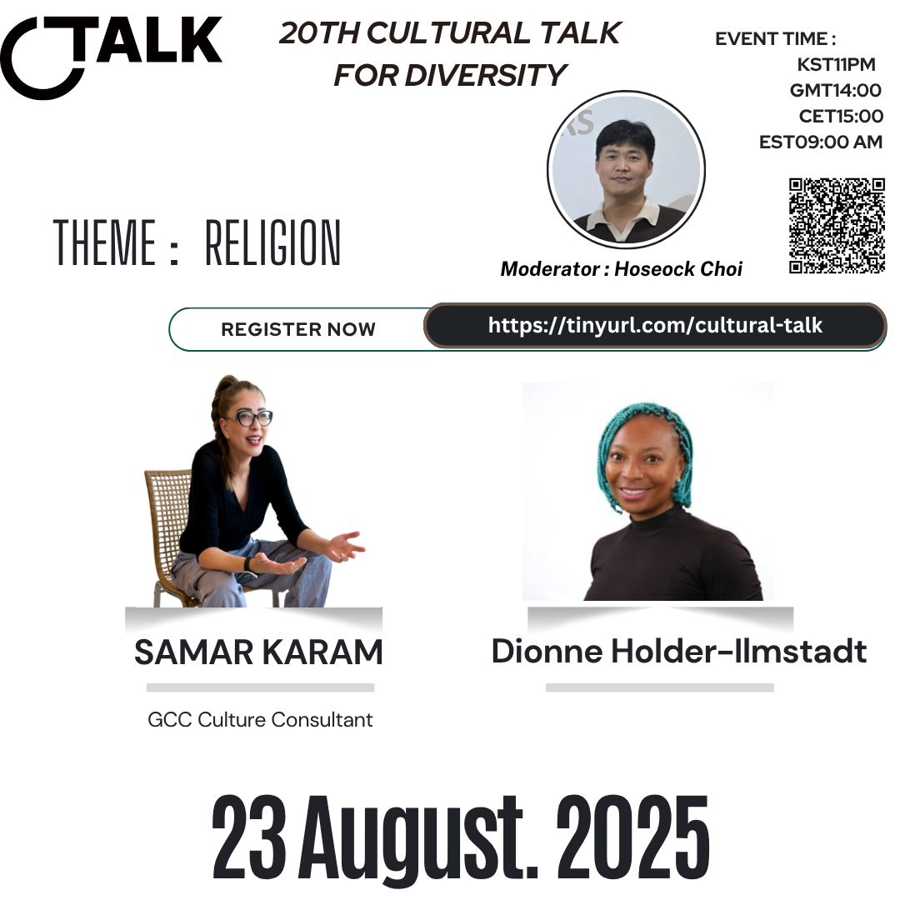
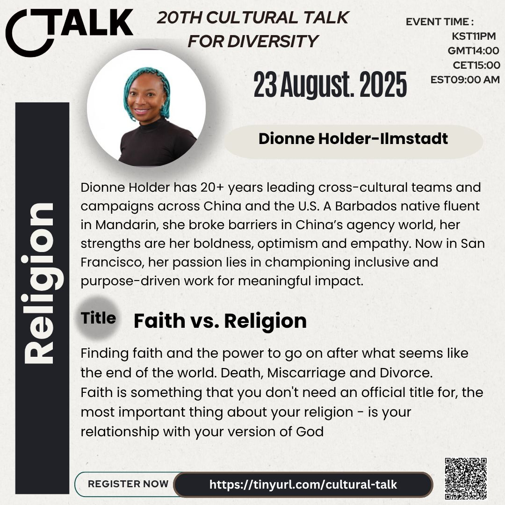
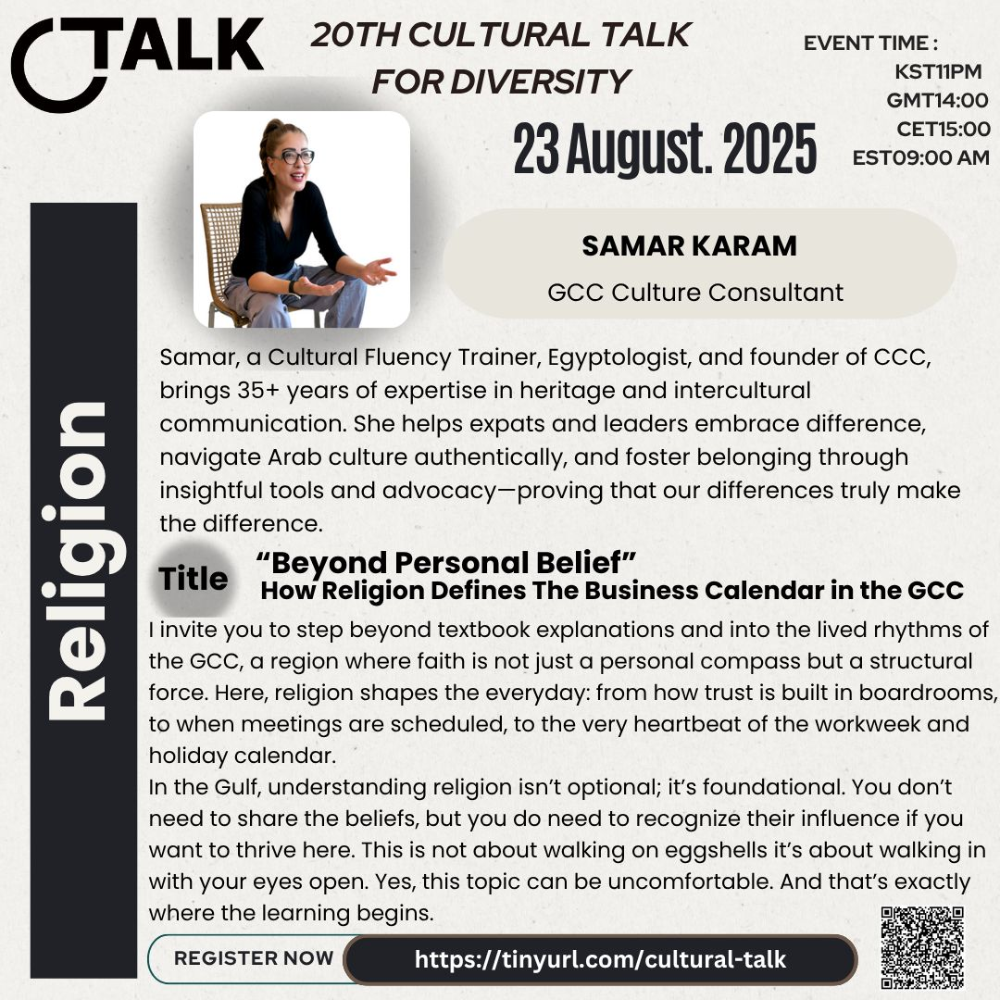

20th Cultural Talk For Diversity
Theme: Conflict & Peace

Event Details
Date: 23 August, 2025
Time: 23:00 (KST) / 14:00 (GMT) / 16:00 (CET) / 10:00 (EDT) / 07:00 (PDT)
This event has already taken place and is now part of our archive.
Conference Overview
This session explored how religion, belief, and cultural context shape both personal identity and social life. It invited participants to consider how faith can become a source of resilience, misunderstanding, structure, or connection depending on the context in which it is lived and interpreted.

Dionne Holder-Ilmstadt
Cross-cultural leader and inclusive communications advocate
Dionne Holder-Ilmstadt has more than 20 years of experience leading cross-cultural teams and campaigns across China and the United States. A Barbados native fluent in Mandarin, she is known for her boldness, optimism, empathy, and commitment to meaningful, purpose-driven work.
Topic: Faith vs. Religion
Drawing from deeply personal life experiences, this talk reflected on the difference between formal religion and lived faith. It explored how a relationship with God can become a source of strength, meaning, and endurance even in the face of grief, loss, and major life upheaval.

Samar Karam
GCC Culture Consultant
Samar is a cultural fluency trainer, Egyptologist, and founder of CCC with more than 35 years of experience in heritage and intercultural communication. She helps expats and leaders navigate Arab culture with greater authenticity, awareness, and respect.
Topic: Beyond Personal Belief — How Religion Defines the Business Calendar in the GCC
This talk examined how religion functions not only as a private belief system but also as a structural force in everyday life across the Gulf region. It highlighted how faith shapes trust, scheduling, holidays, business rhythms, and the practical realities of working effectively across cultures.
Related Coverage
You can explore additional posts and news coverage related to this conference below.